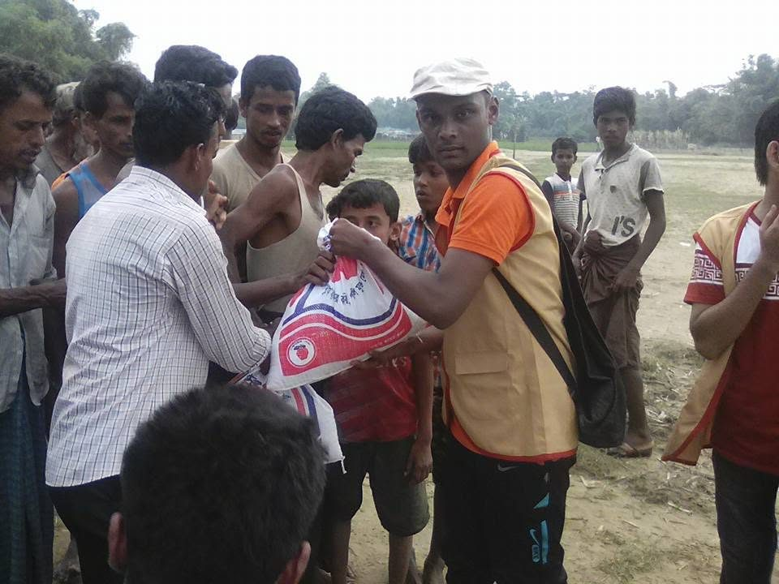
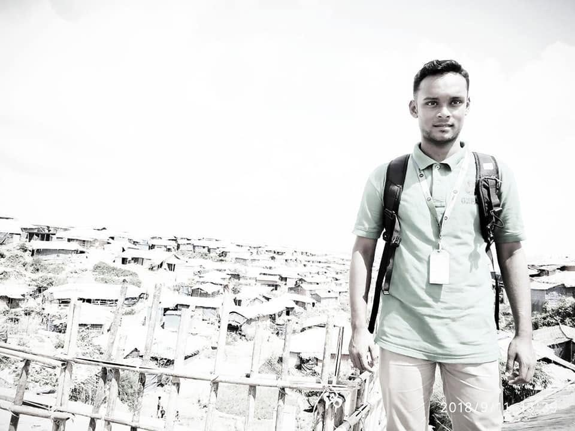
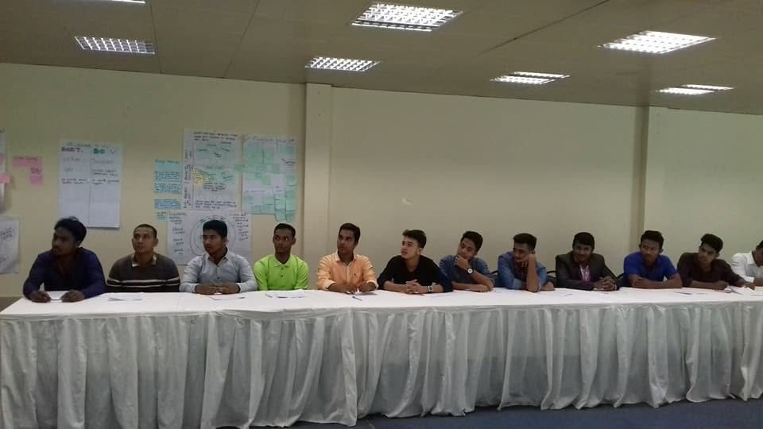
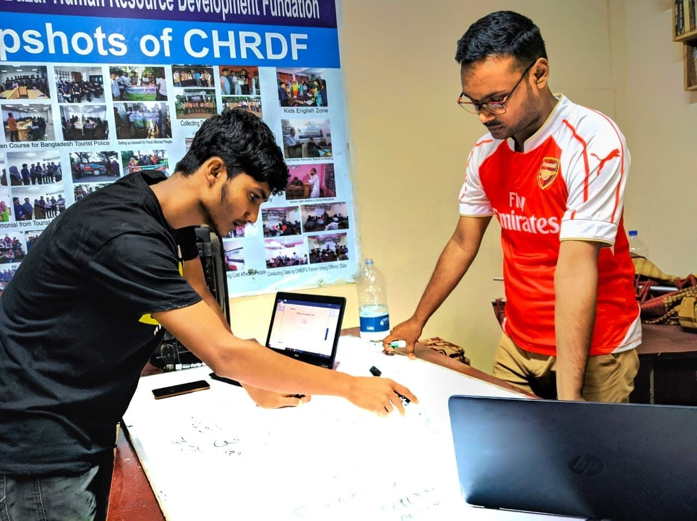
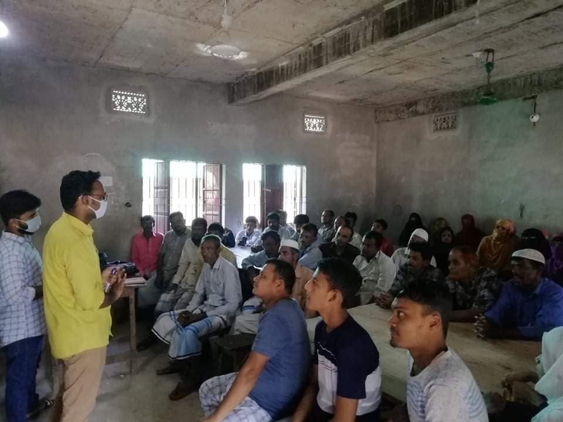

Experience
-
2017
CHRDF · Cox's Bazar, Bangladesh
Emergency Relief Distribution
Supporting emergency relief distribution and field coordination for displaced Rohingya communities in Cox's Bazar, Bangladesh.

-
2018
Oxfam · Rohingya Camp, Cox's Bazar, Bangladesh
Field Engagement
Participating in humanitarian field operations, community engagement, and project implementation within the Rohingya refugee response.

-
2018
Oxfam GB
EFSVL Training
Participated in the Emergency Food Security and Vulnerable Livelihoods (EFSVL) training organized by Oxfam GB to strengthen technical knowledge and field implementation capacity for humanitarian response.

-
2020
CHRDF
Research & Strategic Planning Session
Working closely with the Media & Publications and Human Resources teams to develop innovative ideas and strengthen organizational initiatives.

-
2020
SARPV · EFSN Project
Community Awareness Session
Facilitated a community awareness session under the EFSN Project, promoting community engagement, knowledge sharing, and participation to support project objectives.

Field Photos
Get in Touch
Committed to Humanitarian Service & Sustainable Development
Thank you for taking the time to review my professional portfolio. This portfolio reflects my journey, experiences, and commitment to humanitarian action, community development, and organizational excellence. I look forward to contributing my knowledge, skills, and dedication to organizations that strive to create meaningful and lasting social impact.
I welcome the opportunity to discuss how my experience can contribute to your organization's mission and objectives.